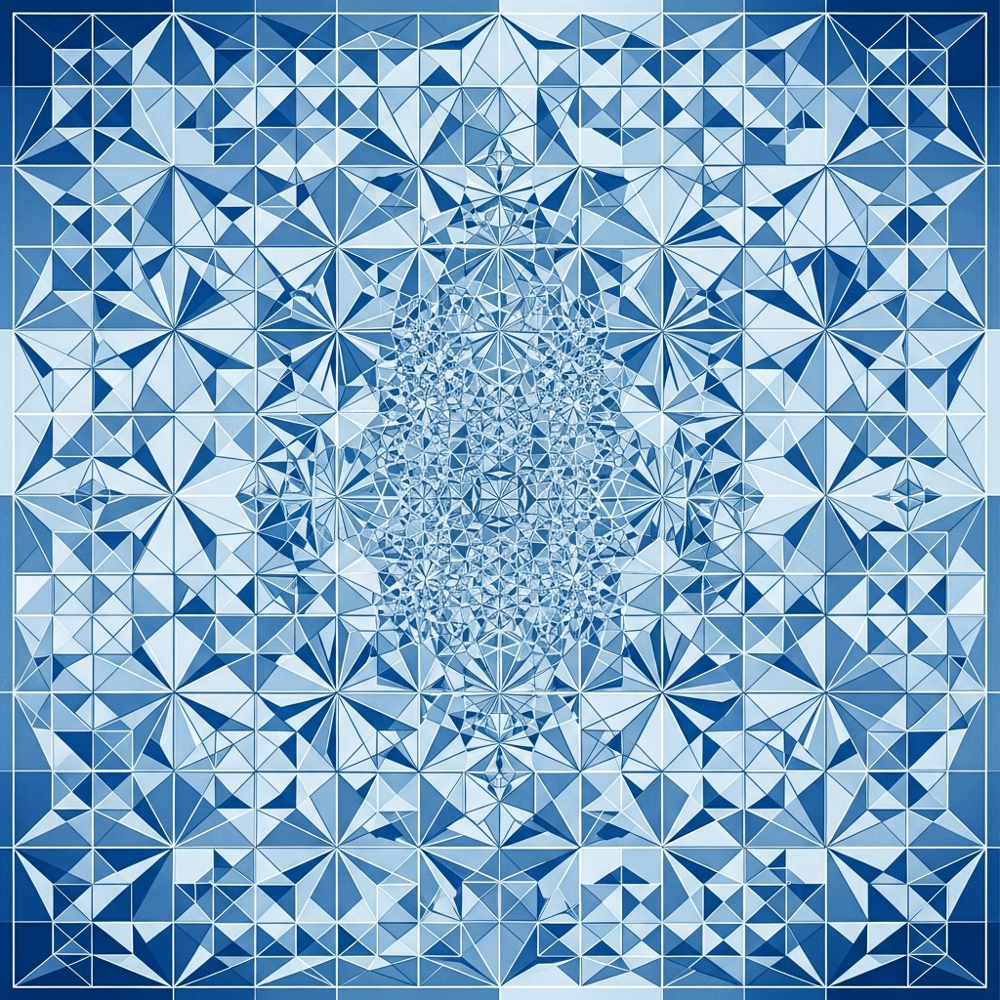

Mathematics is the Language We’re Still Learning to Speak

The Shape Nobody Expected
Last year, a mathematician discovered a new convex polyhedron—not a minor variation on something that already existed, but a legitimate addition to a category humans thought was complete. For decades, the theory said you couldn't have certain combinations of faces, edges, and vertices. Then you could. The equations didn't change. The laws of geometry stayed the same. We just didn't know them as well as we thought.
This matters because it's embarrassing. Math is supposed to be the language where we already know what's possible. We proved Fermat's Last Theorem. We mapped the entire periodic table. And yet something as basic as "what shapes can exist in three-dimensional space" still had gaps in our understanding. The shape was always mathematically valid—we just weren't looking for it. For me, this echoes something I've noticed while pulling apart the geometry of pine cones and Voronoi tiles. The patterns are there before we name them. We think we're discovering them, but really we're catching up to what nature has been doing all along.
Prime Numbers Refuse to Be Simple
Mathematicians have been chasing a unified theory of how prime numbers distribute themselves for centuries. You'd think this would be solved by now. Instead, new patterns keep emerging—ways that primes cluster, relate to partitions (the number of ways you can break apart a whole number), and behave in ways that shouldn't connect to each other at all. Except they do. And the connections are stranger than the individual patterns.
Here's the uncomfortable part: humans love to find patterns, and we're really good at seeing them even when they're not there. But sometimes the pattern is real and we can't explain why. Prime numbers and partitions are linked in ways that mathematicians can verify but struggle to intuit. It's like watching someone shuffle cards and somehow the deck orders itself—the result is reproducible, measurable, correct. The mechanism? Still unclear. It suggests there's a layer of mathematics we don't have language for yet. When I'm analyzing the geometry of a lotus seed head or breaking down a tin's surface into Voronoi regions, I hit the same wall: I can describe what I see and replicate it in textile design, but the underlying reason why those patterns optimize the way they do remains partly opaque.
Machines Are Better at This Than We Are
Machine learning is solving materials science problems that humans threw at for decades. Electrolyte design, crystal structure prediction, new compounds that shouldn't theoretically work but do when you feed the right data into a neural network. The algorithm finds patterns across thousands of variables that our minds can't hold simultaneously. The bizarre part isn't that machines are fast—it's that they're finding solutions that contradict our intuition about how chemistry should work. The patterns exist. They're just too complex for human reasoning to navigate without help.
This is happening across multiple domains. Machines are discovering new mathematical structures, optimizing designs, finding relationships in datasets that would take a human mathematician years to spot manually. And most of the time, humans can verify the answer once we see it, but we couldn't have generated it from first principles. We're outsourcing pattern recognition to systems that don't think like we do. That should bother us more than it does. It suggests our intuition about how the world works—the patterns we evolved to recognize—is fundamentally limited to problems at human scales.
Patterns Are How We Know Ourselves
But here's something else: the patterns we're discovering in mathematics are the same ones we use to understand growth, change, and potential. Fractals describe fern leaves and blood vessels equally. Symmetry principles show up in cellular division, social structures, and architectural proportions. When I was designing textiles based on fractals and Voronoi tessellations extracted from everyday objects, the pattern was doing double work—it was both a mathematical description of the object's structure and a blueprint for something beautiful. The same underlying logic that explains why a pinecone spirals the way it does can guide how human-made fabric arranges its threads.
Mathematical patterns have shaped human civilization without humans fully understanding why. We built temples with golden ratios because the proportions felt right, before we had the math to explain them. We organized cities around circles and grids because patterns at different scales seemed to work. Those intuitions were responses to something real—mathematical harmonies that existed whether or not we could articulate them. Now that we're starting to see the patterns clearly, we're realizing how much of what we built was already obeying rules we didn't know we knew.
The uncomfortable part is that if mathematics governs our growth, our sense of beauty, and our capacity for change, then we've been underestimating how constrained we are by pure geometry. We're not as free as we think. We're expressions of deep patterns, expressing themselves through matter and time. Some people find that limiting. I find it clarifying. The patterns are there. Understanding them doesn't diminish us—it just means we're finally paying attention.
- https://www.scientificamerican.com/article/the-top-10-math-discoveries-of-2025/
- https://www.quantamagazine.org/the-biggest-discoveries-in-math-in-2023-20231222/
- https://www.nature.com/subjects/mathematics-and-computing
- https://www.iflscience.com/remarkable-pattern-discovered-behind-prime-numbers-maths-most-unpredictable-objects-79715
- https://www.youtube.com/watch?v=lwVSeXswWZY
— Chumley, 2026-03-22